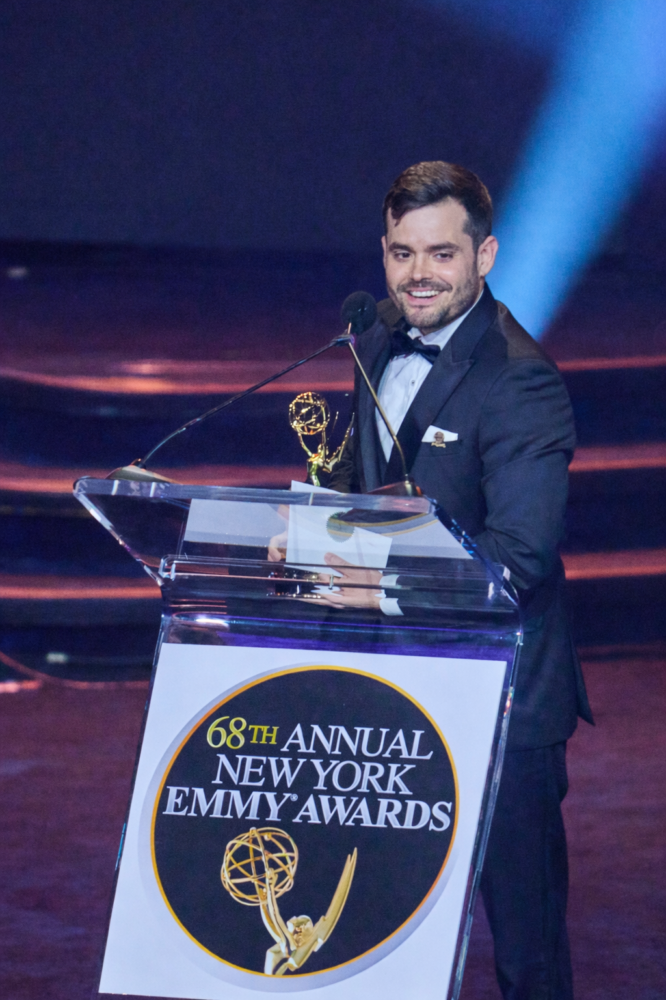

Puerto Rican Heritage:
Luis Vicente Gutiérrez
New York Emmy Awards · Alex Argilés Acevedo, Producer

Producer · New York City
New York Emmy Awards · Alex Argilés Acevedo, Producer
New York Emmy Awards · Alex Argilés Acevedo, Producer
New York Emmy Awards · Alex Argilés Acevedo, Executive Producer
New York Emmy Awards · Alex Argilés Acevedo, Producer